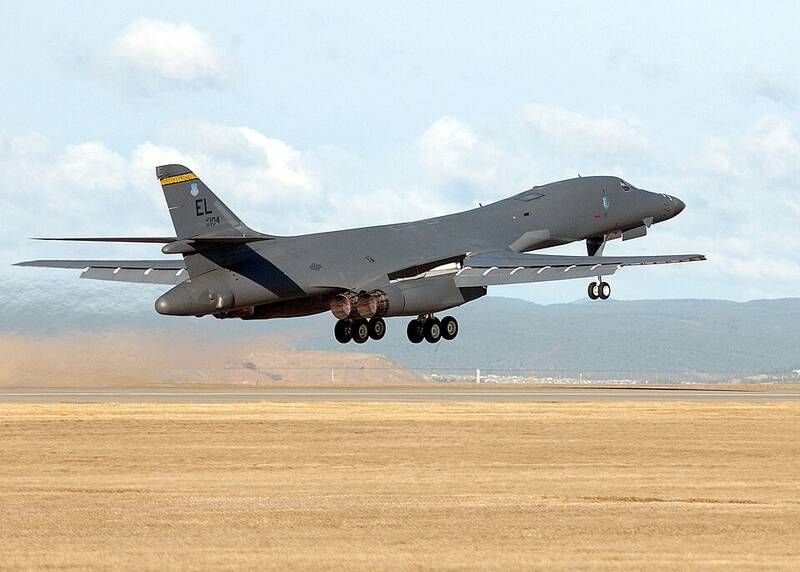

Ellsworth AFB
South Dakota

B-1 bomber base, future home of the B-21. In the 1970s its 44th Missile Wing ran Minuteman nuclear missile sites across western South Dakota, the setting of the disputed 1977 L-9 incident. 1
Open in the interactive Watcher
Related
Sources
- Ellsworth Air Force Base Wikipedia